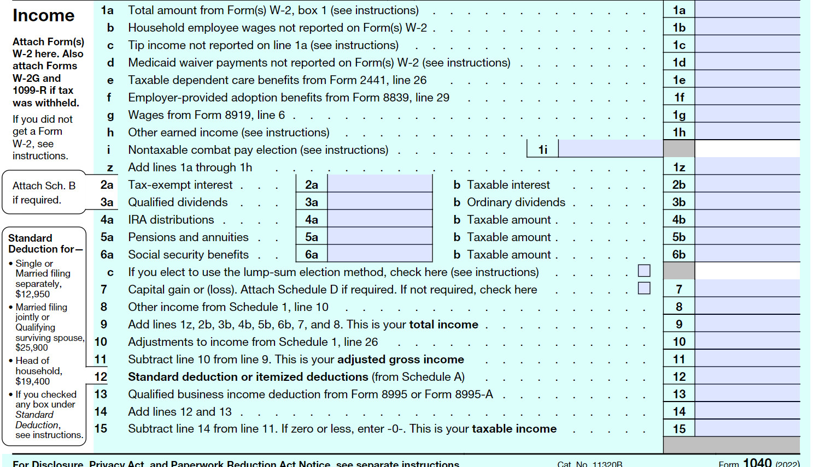

Calculate gross income and adjusted gross income (AGI)
Determine the standard deduction according to filing status
Determine whether to use the standard or itemized deductions and calculate taxable income
Calculate income tax from tables
Compare taxes owed to withholdings to determine whether a refund is due or a payment is required
Subsection3.5.1A Very Brief History of Taxes
Although Benjamin Franklin famously claimed in 1789 that “in this world nothing can be said to be certain, except death and taxes”, it wasn’t until 1913 that the 16th amendment was ratified, and income tax was legalized. Prior to this, taxes were primarily collected through tariffs on imported goods, poll taxes, and property taxes. A poll tax, also referred to as a head tax, was a fixed amount every liable individual had to pay. Payment of the poll tax was often required before a person could register to vote or be issued a hunting or fishing license.
Tax policy in the United States is a politically divisive issue. There is even debate as to the current length of the tax code! Some claim that the code is over 70,000 pages while others insist it is just over 2,000. Nevertheless, there is at least one thing everyone can agree with - you don’t want to be on the wrong side of the Internal Revenue Service (IRS)!
Subsection3.5.2Types of Income Tax
Income tax is a tax that is levied on earned income or profit. Income taxes are collected by the federal government, states, and even some municipalities. Income taxes are an important source of funding, and are used to finance social programs, maintain and expand infrastructure, and provide foreign aid, among other things.
Subsection3.5.3Federal Income Tax
Anyone who earns income over a certain amount (approximately $10,000 for an individual) must file a federal tax return and have taxes collected on their behalf. The amount of federal tax owed is determined by your filing status and taxable income.
Subsection3.5.4State Income Tax
Forty-one states and the District of Columbia collect taxes on income from wages and investment. Seven states - Washington, Nevada, South Dakota, Wyoming, Alaska, Texas, and Florida – do not collect tax on wage or investment income, and two states – New Hampshire and Tennessee – only collect tax on investment income. The amount of tax collected varies by state, with each state averaging between $500 and $3000 per person.
Subsection3.5.5Municipal Income Tax
Some municipalities (urban districts) also collect income taxes. For example, business owners in Multnomah County pay a municipal tax on their business income, and workers in the Tri-met district (area served by Tri-met) have their wages taxed at 0.7537%.
Subsection3.5.6Calculating Federal Income Tax
Not all income is taxed, and not all income that gets taxed is taxed at the same rate. The general process of calculating the amount of federal income tax you owe is outlined in the chart below.
Figure3.5.1.Steps to Calculate Federal Income Tax
Subsection3.5.7Gross Income
Gross income includes all wages, tips, earned interest, dividends, rents and royalties, alimony, property gains, income tax refunds, etc. Keep in mind that ALL income means ALL income. Even income earned from a crime must be reported!
Subsection3.5.8Adjusted Gross Income
Adjustments are eligible expenses used to reduce your gross income. Adjustments are tax-exempt and thus reduce the amount owed in taxes. Eligible expenses include contributions to tax deferred savings plans (401k, Individual Retirement Plan (IRA)), school tuition, student loan interest, moving expenses, business expenses, flexible spending accounts and health savings account contributions.
Subsection3.5.9Taxable Income
Taxable income is determined by subtracting your deductions from your adjusted gross income. You may choose to take either a standard deduction, which is determined by your filing status, or you may choose to itemize your deductions. Itemized deductions may include state and local income taxes, property taxes, medical expenses, mortgage interest, and charitable donations.
Prior to the 2018 tax year, you could also claim personal exemptions. Exemptions of $4,050 for each member of the household were subtracted from the adjusted gross income along with either the standard or itemized deduction to determine taxable income. Starting in 2018, however, the standard deduction was doubled, and personal exemptions were eliminated.
Let’s look at an example of how to calculate gross income and adjusted gross income (AGI).
Example3.5.2.
Sasha received $45,000 in wages and earned $1,300 in interest from his savings plan. He paid $1,400 in student loan interest, and put $4,000 into his Individual Retirement Account (IRA). Determine Sasha’s adjusted gross income.
To calculate Sasha’s adjusted gross income, we need to first determine his gross income. His gross income includes his wages and earned interest:
Gross Income \(=\$45,000+\$1,300=\$46,300\)
To find his adjusted gross income, we need to subtract eligible adjustments from his gross income. His eligible adjustments include the interest paid on his student loans, and his contributions to his IRA:
Adjusted Gross Income \(=\$46,300-\$1,400-\$4,000=\$40,900\)
Subsection3.5.10Filing Status
Your filing status is determined by your family situation. Are you married, widowed, divorced, caring for a family member? It is possible to fall into more than one category, but you may choose the one that is most beneficial for you.
Single: If you are unmarried, legally separated from your spouse, or divorced on the last day of the year.
Married Filing Jointly: If you are married and both you and your spouse agree to file a joint return. (On a joint return, you report your combined income and deduct your combined allowable expenses.)
Married Filing Separately: If you are married and you want to be responsible only for your own tax, or if this status results in less tax than a joint return.
Head of Household (with qualifying person): If you are 1) unmarried or considered unmarried on the last day of the year, 2) paid more than half the cost of keeping up a home for the year, and 3) have a qualifying dependent living with you for more than half the year (except temporary absences, such as school).
Qualifying Widow/Widower (with dependent child): This status is available for the two years following the death of your spouse.
Your filing status determines your standard deduction and tax liability. The standard deduction for each filing status for the tax year 2022 is given in the table below.
Filing Status
Standard Deduction for Tax Year 2022
Single
$12,950.
Married Filing Jointly
$25,900
Married Filing Separately
$12,950
Head of Household
$19,400
Qualifying Widow
$25,900
Here is an example where we calculate adjusted gross income and taxable income.
Example3.5.3.
Maria earned wages of $32,400 from her job as a server. She also earned $8,300 in tips, and received $95 in interest from a savings account. In trying to save for retirement, Maria has put $3,500 into a 401K tax deferred savings plan. She is unmarried and lives with her six year old daughter. Determine Maria’s gross income, adjusted gross income, and taxable income.
Maria’s gross income includes her wages, tips, and earned interest.
Gross Income = $32,400 + $8,300 + $95 = $40,795
Maria can use her 401k contribution as an adjustment.
Adjusted Gross Income = $40,795 - $3,500 = $37,295
Since Maria is unmarried and is the primary caregiver for her daughter, she can file as the head of household and take the standard deduction of $19,400.
Taxable Income = $37,295 - $19,400 = $17,895
Activity3.5.1.
Gracie and Lancel are a couple. Below is a list of relevant information regarding their income taxes.
Gracie and Lancel are married with no kids, filing jointly. No one can claim either as a dependent.
Together, they earned $106,900 of wage income
They did not earn anything from interest, dividends, distributions, annuities, benefits, capital gains, or anything else.
They plan to take the standard deduction.
They contributed more than $600 to their church (According to instructions from the IRS, for a couple filing jointly who take the standard deduction, the maximum amount they can claim is $600).
They had no qualified business income
They can claim $2250 in adjustments to income because Gracie is an elementary teacher who can mark $250 for educator expenses and they can claim $2000 because of their payments toward the interest of their student loans.
Fill out boxes 1-15 the form to find the couple’s taxable income

Usually tax owed is looked up from a tax table. You would use the first line of the table if the taxable income from line 6 is at least 78,000 but less than 78,050.
Write this as a compound inequality, using \(t\) to represent the income from line 6.
Then use the table provided to determine the tax the couple owes.
Subsection3.5.11Tax Tables
The United States has a progressive federal income tax system which means the more income you have, the more you generally pay in taxes. There are marginal tax rates that go up according to our income, but we don’t pay the same rate on all of our income. The ranges of income are called tax brackets and the buckets in the illustration below can help us visualize the brackets.
The cutoff values in the figure are for a married couple filing jointly, but the percentages are the same for everyone as you’ll see in the table on the next page. We pay 10% of any taxable income in the first bucket. If the first bucket is full, we move to the second bucket and we pay 12% of that income. This couple is in the 22% tax bracket because the 3rd bucket is partially filled. They will pay 22% of the income in that bucket, but they are not paying 22% of their entire income.
Here is a table with cutoff values for each filing status. Everyone pays a tax of 10% on any income in the first tax bracket. Then we all pay 12% of the next bracket of income, 22% of the next bracket, and so on. This keeps going up to the 37% tax bracket.
Marginal Tax Rate On Taxable Income
Filing Single
Filing as Head of Household
Married filing Jointly
Married filing Separately
10%
First $10,275
First $14,650
First $20,550
First $10,275
12%
$10,276 to $41,775
$14,651 to $55,900
$20,551 to $83,550
$10,276 to $41,775
22%
$41,776 to $89,075
$55,901 to $89,050.
$83,551 to $178,150.
$41,776 to $89,075
24%
$89,076 to $170,050.
$89,051 to $170,050
$178,151 to $340,100.
$89,076 to $170,050.
32%
$170,051 to $215,950
$170,051 to $215,950
$340,101 to $431,900
$170,051 to $215,950
35%
$215,951 to $539,900
$215,951 to $539,900
$431,901 to $647,850
$215,951 to $323,925
37%
$539,901 or more
$539,901 or more
$647,851 or more
$323,926 or more
Table3.5.5.2022 Tax Year Marginal Tax Rates
Let’s see how to use this table to calculate taxes in an example.
Example3.5.6.
If Avery is filing single and has $55,100 in taxable income, calculate their tax.
We begin with the lowest tax bracket and take 10% of $9,525. Since their income is higher than that, we add 12% of the next amount, found by subtracting the values in that bracket. Avery’s taxable income is in the 22% tax bracket, so we find the amount over $38,700 by subtracting. Here is the full calculation:
Avery would owe $7,739 in taxes. Note that their overall tax rate is somewhere between 10% and 22%. We can calculate the actual rate by dividing their tax owed by their taxable income:
\(\frac{\$7,739}{\$55,100}=0.1405\) or about 14%
We could calculate all taxes this way, but you might notice that the first few terms will be the same if the buckets are full. For this reason, we can simplify these tax tables. The tax tables below give the value for all of the lower tax buckets that are full. There is a tax table for each filing status and the cutoffs are regularly adjusted for inflation, so they usually vary from year to year.
The next four tables give the tax calculations for 2022 federal income taxes by filing status.
If taxable income is:
The tax is:
$0 to $10,275
10% of the taxable income
$10,276 to $41,775
$1,027.50 plus 12% of the amount over $10,275.
$41,776 to $89,075
$4,807.50 plus 22% of the amount over $41,775.
$89,076 to $170,050
$15,213.50 plus 24% of the amount over $89,075.
$170,051 to $215,950
$34,647.50 plus 32% of the amount over $170,050.
$215,951 to $539,900
$49,335.50 plus 35% of the amount over $215,950.
$539,901 or more
$162,718 plus 37% of the amount over $539,900.
Table3.5.7.Filing as Single (Tax Year 2022)
If taxable income is:
The tax is:
$0 to $14,650.
10% of taxable income.
$14,651 to $55,900.
$1,465 plus 12% of the amount over $14,650.
$55,901 to $89,050.
$6,415 plus 22% of the amount over $55,900.
$89,051 to $170,050.
$13,708 plus 24% of the amount over $89,050.
$170,051 to $215,950.
$33,148 plus 32% of the amount over $170,050.
$215,951 to $539,900.
$47,836 plus 35% of the amount over $215,950.
$539,901 or more.
$161,218.50 plus 37% of the amount over $539,900.
Table3.5.8.Filing as Head of Household (Tax Year 2022)
If taxable income is:
The tax is:
$0 to $20,550.
10% of taxable income.
$20,551 to $83,550.
$2,055 plus 12% of the amount over $20,550.
$83,551 to $178,150.
$9,615 plus 22% of the amount over $83,550.
$178,151 to $340,100.
$30,427 plus 24% of the amount over $178,150.
$340,101 to $431,900.
$69,295 plus 32% of the amount over $340,100.
$431,901 to $647,850.
$98,671 plus 35% of the amount over $431,900.
$647,851 or more.
$174,253.50 plus 37% of the amount over $647,850.
Table3.5.9.Married Filing Jointly (Tax Year 2022)
If taxable income is:
The tax is:
$0 to $10,275.
10% of taxable income.
$10,276 to $41,775.
$1,027.50 plus 12% of the amount over $10,275.
$41,776 to $89,075.
$4,807.50 plus 22% of the amount over $41,775.
$89,076 to $170,050.
$15,213.50 plus 24% of the amount over $89,075.
$170,051 to $215,950.
$34,647.50 plus 32% of the amount over $170,050.
$215,951 to $323,925.
$49,335.50 plus 35% of the amount over $215,950.
$323,926 or more.
$87,126.75 plus 37% of the amount over $323,925.
Table3.5.10.Married Filing Separately (Tax Year 2022)
Example3.5.11.
Suppose Adira is filing as head of household and has a taxable income of $96,450. Calculate her taxes using the individual tax brackets and with the simplified table.
Using the simplified tax table for single filing status, we see that Adira’s taxable income puts her in the 24% tax bracket. The simplified table tells us that her taxes will be equal to $15,213.50 plus 24% of the amount over $89,075. To find the excess over $89,075, we subtract $89,075 from her taxable income. Thus, her taxes are:
Phyl and Gladys are married and filing jointly. Together their taxable income is $112,000. Use the simplified 2022 tax tables from this section to determine how much they owe in taxes.
Since Phyl and Gladys are married and filing jointly, their taxable income puts them in the 22% tax bracket. Using the simplified 2022 tax table, their taxes are $9,615 plus 22% of the amount over $83,550:
Consider Gracie and Lancel’s taxes from Activity 3.5.1. Try calculating their income tax based on Table 3.5.9. It ought to be different by a couple cents. Why do you think that is the case?
A commonly held belief is that marginal tax rate applies to all of a person’s taxable income. What is 12% of their taxable income, and how does this compare to actual income tax?
What percent of their taxable income are they paying? This is called the effective or average tax rate. Round your answer to a tenth of a percentage point.
Sometimes people have been hesitant to accept raises, worried that it will push them into a new tax bracket and they’ll end up losing money.
Suppose the couple got an unexpected $6,000 bonus at the end of the year, pushing them into the 22% marginal rate tax bracket. How much tax will they pay?
What is the difference between their take-home pay with and without the bonus? Will the couple end up with less take-home pay because the bonus pushed them into a higher tax bracket?
Subsection3.5.12Tax Credits
Tax credits are different from deductions in that they reduce the amount of tax you owe by the full amount of the credit, not just a percentage. This makes credits much more valuable than deductions.
Common tax credits include child tax credits, earned income credits, child and dependent care credits, American opportunity tax credits, lifetime learning credits, and various federal energy credits.
Example3.5.13.
Sean is in the 22% tax bracket and itemizes his deductions. How much will his tax bill be reduced if he makes a $1,000 contribution to charity? How much will his bill be reduced if he gets a $1,000 tax credit?
The tax credit will reduce his tax bill by the full amount of the credit, so the $1,000 tax credit will reduce his tax bill by $1,000. As a deduction, however, his contribution to charity will only reduce his tax bill by 22% of the $1,000, or 0.22($1,000) = $220. Tax credits are always better than deductions.
Subsection3.5.13Calculating a Refund or Payment Due
Employers are required to take out an estimated amount for taxes from each of our paychecks. These withholdings are taken out, so we don’t all have huge tax bills at the end of the year, and so the government has the income it needs to run. When you file your taxes, you compare the amount of tax you actually owe, with the withholdings from your paycheck. If you had more withheld during the year than you owe, you will file for a refund. If your withholdings were less, though, you must pay the difference. Let’s look at a couple of examples with tax credits and withholdings.
Example3.5.14.
John’s taxes are $4,342.50. He can claim an American opportunity tax credit of $2,300 and he had $4,135 withheld from his paychecks. Determine if John will owe money or get a refund.
The first step is to reduce John’s taxes by the full amount of the tax credit.
\(\$4,342.50-\$2,300=\$3,042.50\)
Next we subtract the amount withheld from his paychecks by his employer. Since his withholdings are greater than the amount he owes after applying the tax credit, he will receive a refund equal to the difference.
\(\$3,042.50-\$4,135=-\$1,092.50\)
John will receive a refund of $1,092.50. Notice that having a negative amount after subtracting credits and withholdings means you will receive a refund, while having a positive amount means you still owe money.
Example3.5.15.
As we discovered in Example 3.5.12, Phyl and Gladys owe $15,874 in taxes. Their employers withheld $8,980 and they received a $7,500 credit for their purchase of an electric car. Will they receive a refund, or will they need to make a payment?
To determine whether they will receive a refund or if they will still owe money, we will first subtract the full amount of the electric car credit.
\(\$15,874-\$7,500=\$8,374\)
We now subtract their withholdings:
\(\$8,374-\$8,980=-\$606\)
Since the value is negative, Phyl and Gladys will receive a tax refund of $606.
Activity3.5.3.
While tax tables and the tax rates work well for calculating tax for a single individual, a business might want to create a spreadsheet that automatically calculates the tax for their employees.
For simplicity, let’s assume all of the employees are married and filing jointly, and all of their taxable incomes fall between $20,551 and $83,550. Let’s also assume that they will take the standard deduction, have no other income, make no adjustments to their taxable income, and give nothing to charity. These assumptions will be close enough for this company’s purposes.
Write an equation for cell C2. It should be general enough to be copied down the rest of the column.
Write an equation for cell D2. It should be general enough to be copied down the rest of the column.
Exercises3.5.14Exercises
1.
Which decreases your tax bill more, a credit or a deduction?
2.
You are in the 12% tax bracket and get a credit of $500. How has the amount of taxes owed changed?
3.
You are in the 12% tax bracket and get a deduction of $500. How has the amount of taxes owed changed?
4.
Can you take the standard deduction and itemize your deductions?
5.
Can you make adjustments to your income and take the standard deduction?
6.
If you decide to take the standard deduction what have you considered?
7.
Selah has paid $11,500 in mortgage interest which she can take as a deduction and has $1,500 in other deductions that she can take this year. She is filing as single. Should she itemize her deductions or take the standard deduction?
8.
If you are married do you have to file your taxes together?
9.
Fredrick is concerned about the effect of a raise on his taxes. He’s getting a raise of $3,000, putting him into a higher tax bracket by $1,000 dollars. He’s concerned about his entire income being taxed at 22% instead of 12%. Should he be concerned? Why or why not?
10.
A single person with taxable income of $95,000 will have the first $10,275. of that income taxed at what rate? Determine the taxes owed on just the first $10,275..
11.
A single person with taxable income of $185,000 will have the first $10,275 of that income taxed at a different rate than the income between $10,275 and $41,775. Determine the taxes owed on just the second bracket.
12.
Determine the income tax owed for a single person who has $80,000 of taxable income.
13.
Doug and Christina are filing jointly. They owe $16,589 in taxes. Throughout the year they had $13,456 withheld from their paychecks, and they can claim an energy credit of $2,500 for purchasing a hybrid vehicle. Determine the amount they will need to pay or will get refunded.
14.
Heather owes $7,589 in taxes. Throughout the year she had $6,456 withheld from her paychecks and she can claim an education credit of $1,980. Determine the amount she will need to pay or will get refunded.
15.
Determine the amount of taxes owed or the refund that would result in this situation:
Filing Status: Married filing jointly
Gross Income: $125,000
Adjustments: $5,600
Itemized Deductions: $11,400
Credits: $15,000
What is their adjusted gross income (AGI)?
Should they itemize or take the standard deduction?
Use the simplified 2022 tax tables to determine their taxes.
What is their final tax refund or amount still owed?
16.
Francis and Edward are planning to get married and they want to determine whether there is an advantage or disadvantage to marrying before the end of the year and filing their taxes jointly. Use the information below to calculate the amount they would owe or receive if they each filed as single, and the amount they would owe or receive if they filed jointly as a married couple. Which is the better choice?
Filing Status: TBD
Francis’ Gross Income: $35,000
Edward’s Gross Income: $40,000
Francis’ Adjustments: $7000
Edward’s Adjustments: $3000
Francis’ Withholdings: $14000
Edward’s Withholdings: $5500
Francis’ Credits: $4000
Edward’s Credits: $5000
17.
Janice is unmarried and has two kids. She earned $76,000 in wages last year, received $750 in interest from a savings account, and contributed $25,000 to a tax deferred savings account. Her itemized deductions are $20,600.
Determine Janice’s gross income.
Determine Janice’s adjusted gross income.
Should Janice take the standard deduction or itemize? Explain.
Determine Janice’s taxable income.
If Janice has $4,200 in child tax credits and had $6,300 withheld for taxes from her wages, will Janice owe money, or will she receive a refund? Calculate the amount.


![A drawing that shows the tax brackets as buckets being filled from a hose labeled taxable income; the first bucket for the 10% tax bracket is full and has the range of $0-19,050; the second bucket for the 12% tax bracket is also full and has the range of $19051-77,400; the third bucket for the 22% bracket is partially full and has the range of $77,401-165,000; there are buckets for the 24%, 32%, 35% and 37% tax brackets which are empty. The cutoff values for all of these brackets are given in the next table.](external/financial_math/2_5/tax_tables.png)